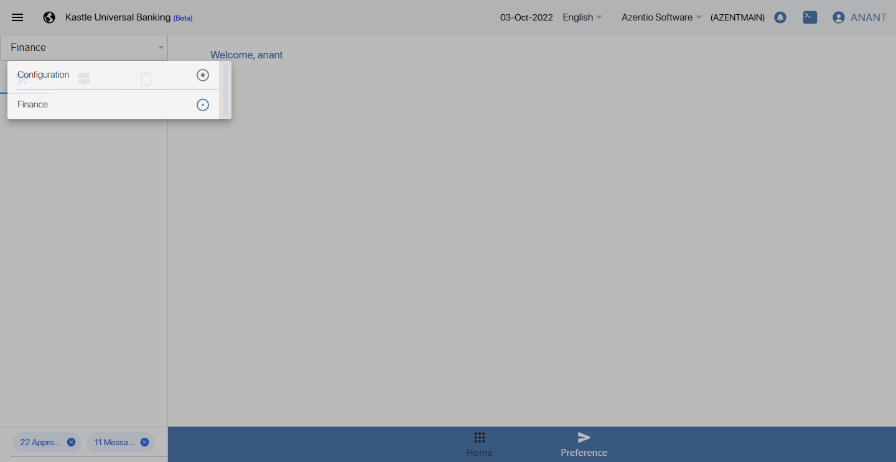
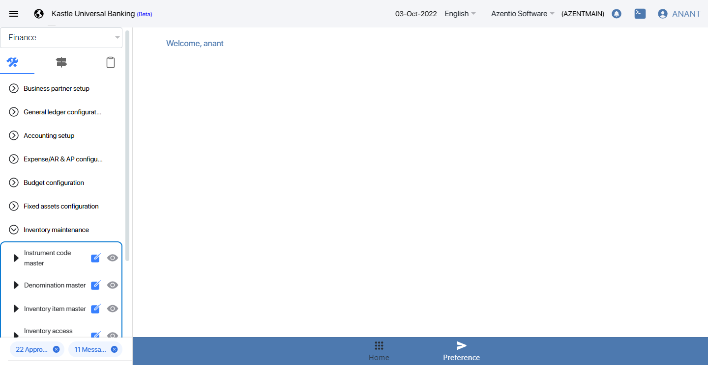
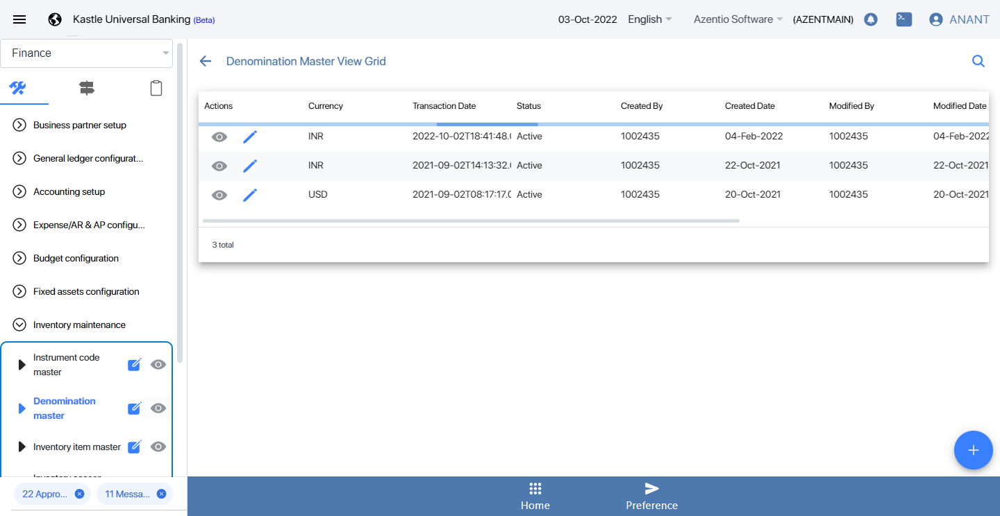
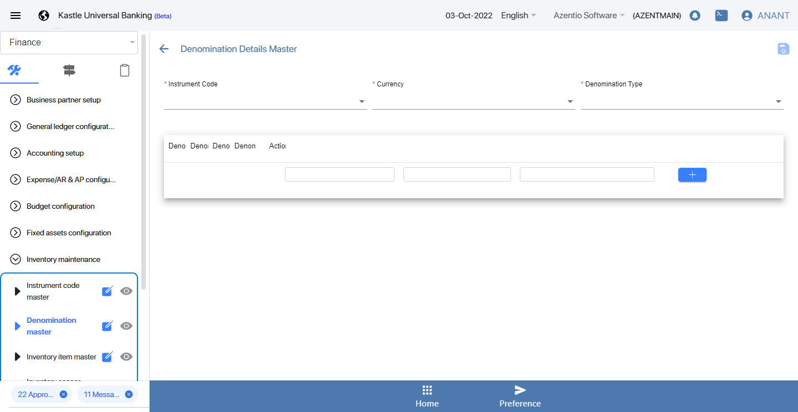
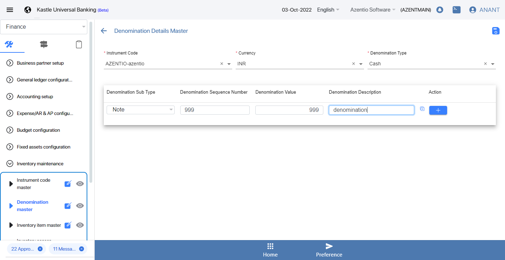

-
INVENTORY MAINTENANCE
08:40:07 AM / 50:30:381 Fail
INVENTORY MAINTENANCE
02.04.2022 08:40:07 02.04.2022 09:30:38 50:30:381 · #test-id=1DenominationFailCreate denomination detailsGiven User should navigate to the kubs url and login as a maker userstepdefinitions.HooksClass.addScreenshot(io.cucumber.java.Scenario)screenshotAnd user should navigate to denomination master menustepdefinitions.HooksClass.addScreenshot(io.cucumber.java.Scenario)screenshotWhen click on eye button of denomination masterstepdefinitions.HooksClass.addScreenshot(io.cucumber.java.Scenario)screenshotAnd click on add button to create denomination detailsstepdefinitions.HooksClass.addScreenshot(io.cucumber.java.Scenario)screenshotAnd Fill the required fields to create denomination detailsstepdefinitions.HooksClass.addScreenshot(io.cucumber.java.Scenario)screenshotThen Save and submit the creation denomination detailsstepdefinitions.HooksClass.addScreenshot(io.cucumber.java.Scenario)And User should go to the kubs url and login as a reviewer userStep skippedThen Click on notification button in reviewerStep skippedAnd approve the record by reviewer userStep skippedGiven User should go to the kubs url and login as a checker userStep skippedAnd Click on security management in checkerStep skippedThen Click on open pool in checkerStep skippedAnd Click on claim button in checkerStep skippedAnd capture claimed statusStep skippedThen click on notification in checkerStep skippedThen checker should approved the denomination detailsStep skippedAnd system should show the prompt messageStep skippedAnd checker logoutStep skippedstepdefinitions.HooksClass.TearDown(io.cucumber.java.Scenario)
Started
Feb 4, 2022 08:40:06 AM
Ended
Feb 4, 2022 09:30:38 AM
Features Passed
0
Features Failed
1
Features
Scenarios
Steps
Timeline
Tags
| Name | Passed | Failed | Skipped | Others | Passed % |
|---|---|---|---|---|---|
| @KUBS_INV_MGMT_UAT_002_002 | 0 | 1 | 0 | 0 | 0% |
System/Environment
| Name | Value |
|---|---|
| version | 10 |
| os | windows |
-
@KUBS_INV_MGMT_UAT_002_002
1 tests
@KUBS_INV_MGMT_UAT_002_002
1 failedStatus Timestamp TestName Fail 08:40:07 AM Create denomination details INVENTORY MAINTENANCE.Create denomination details
-
org.openqa.selenium.NoSuchWindowException
1 tests
org.openqa.selenium.NoSuchWindowException
1 failedStatus Timestamp TestName Fail 09:30:33 AM stepdefinitions.HooksClass.addScreenshot(io.cucumber.java.Scenario) INVENTORY MAINTENANCE.Create denomination details.stepdefinitions.HooksClass.addScreenshot(io.cucumber.java.Scenario) -
org.openqa.selenium.WebDriverException
1 tests
org.openqa.selenium.WebDriverException
1 failedStatus Timestamp TestName Fail 09:30:33 AM stepdefinitions.HooksClass.TearDown(io.cucumber.java.Scenario) INVENTORY MAINTENANCE.Create denomination details.stepdefinitions.HooksClass.TearDown(io.cucumber.java.Scenario) -
org.openqa.selenium.TimeoutException
1 tests
org.openqa.selenium.TimeoutException
1 failedStatus Timestamp TestName Fail 08:40:26 AM Then Save and submit the creation denomination details INVENTORY MAINTENANCE.Create denomination details.Then Save and submit the creation denomination details